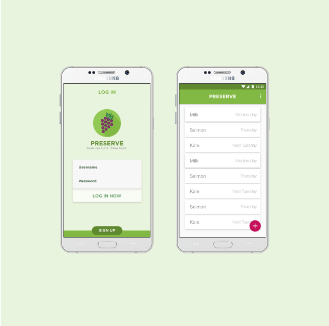

UI/UX Design
SCOPE: team of 4
ROLE: full design, UX thinking to UI illustrations, frontend development
DURATION: march 2017 - october 2017
Preserve is a mobile application that allows users to more easily keep track of their fresh produce and pantry items and when they will expire. It is a food management app that makes handling expiration dates faster and easier by scanning receipts through OCR technology and providing timely notifications.
